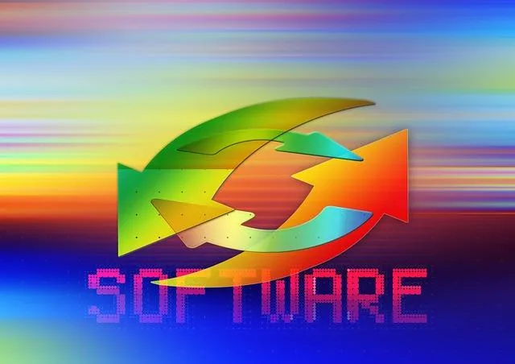

We believe security software like Kicksecure needs to remain Open Source and independent. Would you help sustain and grow the project? Learn more about our 14 year success story and maybe DONATE!
Sometimes the Debian and/or Kicksecure onion servers are non-functional. This could be due to DDoS attacks on the Tor network. [14] As a result, updates cannot be completed automatically and an error message similar to the one below will appear.

This page contains details on updating the Kicksecure operating system, including frozen packages. Most software in Kicksecure is maintained in a frozen state to ensure stability, so updates primarily focus on critical security fixes. The page also covers update indicators, version numbers, release upgrades versus re-installation, and common issues and their solutions.
Updates
Introduction

- Keep all packages updated: Regular updates are essential to maintain system security.
- Update all systems: This includes the host operating system (OS) as well as each virtual machine (VM), especially when using multiple VMs.
Special Notices
Currently none.
Frozen Packages
 As Kicksecure is based on the stable Debian distribution, software is
normally "frozen" to
the stable Debian version at the point of each major Debian
release. The Debian packages page notes: [1]
As Kicksecure is based on the stable Debian distribution, software is
normally "frozen" to
the stable Debian version at the point of each major Debian
release. The Debian packages page notes: [1]
This is the latest official release of the Debian distribution. This is stable and well tested software, which changes only if major security or usability fixes are incorporated.
As a distribution, Debian's collection of software is mostly sourced from "upstream" third parties (the original software vendors). Debian has embraced the principle of software stability, which means each major release "freezes" software versions. As a result, the stable distribution software is not regularly updated except for critical security fixes. This is called "security support" and typically leads only to minimal changes across the entire distribution. The intent is to improve stability by reducing the overall number of system changes.
The frozen packages policy means the versions of software installed from Debian package sources will generally not change when a newer release is made available by upstream. [2]
Related:
Update Notifications by updatecheck
See also systemcheck chapter Update Notifications by updatecheck.
Application Specific Update Indicators
In most cases, specific end-user applications such as electrum show notifications about the availability of newer versions. These can be safely ignored since Electrum is also a Frozen Package. No manual user action is required. To receive security advisories in special cases that do require manual user action, see Follow Kicksecure Developments.
Application-specific update indicators should not be shown to the user and should be disabled by Debian. This is a bug and should not happen. It occurs due to the organisational background.
Standard Update vs Release Upgrade
There are two different types of updates.
- Standard Update
- Release Upgrade
The procedure on this wiki page is for standard ("everyday") updating of Kicksecure and will not perform a Release Upgrade.
It is recommended to first complete a standard update before applying a release upgrade.
Update vs Image Re-Installation
The standard ("everyday") update procedure for Kicksecure is more convenient than a complete re-installation of Kicksecure images because all (VM) settings and user data are persistent. If using VMs, backups are possible by using (VM) clones and/or snapshots.
In contrast, a complete re-installation of Kicksecure images requires Kicksecure to be completely removed and then re-installed, similar to newcomers installing the platform for the first time. This is "cleaner" and elaborated on the Factory Reset page. Obviously, all (VM) settings and data are lost during this procedure. If this is necessary, follow these steps:
- Kicksecure: remove any Kicksecure (VMs) and then re-install them.
- Kicksecure-Qubes: uninstall Kicksecure-Qubes and then install Kicksecure-Qubes.
Developers periodically announce newer Kicksecure Point Releases or major releases. To stay informed about releases, see: Follow Kicksecure Developments. It is recommended to subscribe to relevant news channels for this purpose.
Standard updates are generally easier, but image re-installation can completely avoid technical issues that might emerge during upgrades.
Should a standard upgrade or in-place release upgrade not be possible, in other words, should a complete re-installation ever be required for security-critical reasons, a special announcement would be posted.
Platform Specific Steps
Select your platform.
Kicksecure-Qubes

* At least once per day, Qubes users should update the system package
lists in all Templates, Standalones and dom0 to
obtain the latest version information for new and updated packages
available for download. [3]
- Below are some warnings and issues that are general Qubes bugs and unspecific to Kicksecure-Qubes. Primary sources from Qubes OS are referenced as links with specific citations.
 Quote Qubes
OS "How to update" warning:
Quote Qubes
OS "How to update" warning:
Warning: Updating exclusively with direct commands such as
qubes-dom0-update,dnf update, andapt updateis not recommended, since these bypass built-in Qubes OS update security measures. Instead, we strongly recommend first using the Qubes Update tool or its command-line equivalents, as described below, then using the direct commands for confirmation (see #6585 and PR #79). (By contrast, installing packages using direct package manager commands is fine.)
- Qubes Update tool
- For updating using the command-line, refer to Qubes OS "How to update":
The situation is, however, complicated due to Qubes Updater Issues, most notably:
qubes-dom0-updateshowsNo updates availableif the network is down /qubes-dom0-updatefails to detect unreachable repositories or network issues (might be fixed, depending on update status).
 Note: For Qubes-Whonix users: Updating Tor Browser is a separate issue;
see Update Tor Browser in Qubes-Whonix.
Note: For Qubes-Whonix users: Updating Tor Browser is a separate issue;
see Update Tor Browser in Qubes-Whonix.
Standard Update Steps
1 Save Progress and Backup
On rare occasions [4] the machine might freeze during the upgrade process. In such cases, any materials already in progress might be lost, such as documents or other drafts. If this is applicable, save progress before installing operating system updates. If required, back up all user data. It is ideal to have a copy of the VM(s) so it is possible to try again if necessary.
2 Flatpak Update
This step is only required if the user previously manually installed any software using flatpak. It can be skipped otherwise.
- Kicksecure flatpak update
- Kicksecure for Qubes Template: http_proxy=http://127.0.0.1:8082 https_proxy=http://127.0.0.1:8082 flatpak update
3 Sysmaint Notice

- A
If using
user-sysmaint-split: The user must boot into the sysmaint session. For details and instructions on how to do so, see user-sysmaint-split. - B If using unrestricted admin mode: This sysmaint notice does not apply. Continue with the steps below.
4 Update the APT Package Lists
System package lists should be updated at least once per day [5] [6] with the latest version information for new or updated packages that are available. To update Kicksecure package lists, run:
- graphical user interface (GUI): Use System Maintenance
Panel and click
Check for Updates(which is equivalent to the command below) orInstall Updates. - command line interface (CLI): sudo apt update
The output should be similar to this:
Hit:1 tor+https://deb.debian.org/debian trixie InRelease Hit:2 tor+https://deb.kicksecure.com bullseye trixie Hit:3 tor+https://deb.debian.org/debian trixie-updates InRelease Hit:4 tor+https://fasttrack.debian.net/debian trixie-fasttrack InRelease Hit:5 tor+https://deb.debian.org/debian trixie-security InRelease Hit:6 tor+https://deb.debian.org/debian trixie-backports InRelease Reading package lists... Done
If an error message like this appears:
W: Failed to fetch https://ftp.us.debian.org/debian/dist/trixie/contrib/binary-amd64/Packages 404 Not Found
W: Failed to fetch https://ftp.us.debian.org/debian/dist/trixie/non-free/binary-amd64/Packages 404 Not Found
E: Some index files failed to download. They have been ignored, or old ones used instead.
Err https://ftp.us.debian.org trixie Release.gpg
Could not resolve 'ftp.us.debian.org'
Err https://deb.torproject.org trixie Release.gpg
Could not resolve 'deb.torproject.org'
Err https://security.debian.org trixie/updates Release.gpg
Could not resolve 'security.debian.org'
Reading package lists... Done W: Failed to fetch https://security.debian.org/dists/trixie/updates/Release.gpg Could not resolve 'security.debian.org'
W: Failed to fetch https://ftp.us.debian.org/debian/dists/trixie/Release.gpg Could not resolve 'ftp.us.debian.org'
W: Failed to fetch https://deb.torproject.org/torproject.org/dists/trixie/Release.gpg Could not resolve 'deb.torproject.org'
W: Some index files failed to download. They have been ignored, or old ones used instead.
Or this:
500 Unable to connect
Then something went wrong. It could be a temporary Tor exit relay or server failure that should resolve itself. Check if the network connection is functional by changing the Tor circuit and trying again. Running systemcheck might also help diagnose the problem.
Sometimes a message like this will appear:
Could not resolve 'security.debian.org'
In that case, it helps to run:
nslookup security.debian.org
And then try again.
5 APT Upgrade
To install the newest versions of the current packages installed on the system.
- graphical user interface (GUI): Use System Maintenance
Panel and click
Install Updates. [7] - command line interface (CLI): sudo apt full-upgrade
Please note that if the Kicksecure APT Repository was disabled (see Disable Kicksecure APT Repository), then manual checks are required for new Kicksecure releases and manual installation from source code.
6 Never Install Unsigned Packages!
If a message like this appears:
WARNING: The following packages cannot be authenticated!
thunderbird
Install these packages without verification [y/N]?
Then do not proceed! Press N and
<enter>. Running apt update again should
fix the problem. If not, something is broken or it might be a man-in-the-middle attack, which is not that
unlikely because updates are retrieved via Tor exit relays and some are
malicious. Changing
the Tor circuit is recommended if this message appears.
7 Signature Verification Warnings
No signature verification warnings should appear. If one does occur, it will look similar to the following:
W: A error occurred during the signature verification. The repository is not updated and the previous index files will be used. GPG error: https://deb.torproject.org stable Release: The following signatures were invalid: KEYEXPIRED 1409325681 KEYEXPIRED 1409325681 KEYEXPIRED 1409325681 KEYEXPIRED 1409325681E: Release file for tor+http://deb.w5j6stm77zs6652pgsij4awcjeel3eco7kvipheu6mtr623eyyehj4yd.onion/dists/bullseye/InRelease has expired (invalid since 1 d 20 h 41 min 7 s). Updates for this depot are not applied.Caution is warranted even though APT will automatically ignore repositories with expired keys or signatures, and no upgrades will be received from that repository. Unless the issue is already known or documented, it should be reported for further investigation.
There are two possible reasons for this occurrence. Either there is a problem with the repository that contributors have not yet fixed, or a man-in-the-middle attack has taken place. [8] The latter is not a big issue, since no malicious packages are installed. It may also resolve itself automatically after some time when a different, non-malicious Tor exit relay is used, or following a manual change of the Tor circuit.
In the past, various apt repositories were signed with an expired key. To see how the documentation looked at that point, please click on Expand on the right.
For instance, the Tor Project's apt repository key had expired and the following warning appeared:
W: A error occurred during the signature verification. The repository is not updated and the previous index files will be used. GPG error: https://deb.torproject.org stable Release: The following signatures were invalid: KEYEXPIRED 1409325681 KEYEXPIRED 1409325681 KEYEXPIRED 1409325681 KEYEXPIRED 1409325681
W: Failed to fetch https://deb.torproject.org/torproject.org/dists/stable/Release
W: Some index files failed to download. They have been ignored, or old ones used instead.
This issue was quickly reported. There was no immediate danger and the message could be safely ignored. As a reminder, never install unsigned packages as explained above.
Please report any other signature verification errors if or when they appear, even though this is fairly rare.
8 Changed Configuration Files (direct link)
Be careful if a message like this appears:
Setting up ifupdown ... Configuration file `/etc/network/interfaces'
==> Modified (by you or by a script) since installation.
==> Package distributor has shipped an updated version.
What would you like to do about it ? Your options are:
Y or I : install the package contributor's version
N or O : keep your currently-installed version
D : show the differences between the versions
Z : background this process to examine the situation
The default action is to keep your current version.
- interfaces (Y/I/N/O/D/Z) [default=N] ? N
It is safest to press y, but any customized settings
will be lost (these can be re-added afterwards). [9]
[10]
Conflicts like these should be rare if modular flexible .d style configuration
folders are used.
See also:
9 Autoremove
If APT reports packages that can be autoremoved, safely run APT autoremove.
10 Restart Services After Updating
To restart services after updating, either reboot:
sudo reboot
Or use the (harder) needrestart method to avoid rebooting. For readers interested in the needrestart method, please click on Expand on the right side.
Perform this step once. Install needrestart:
sudo apt update sudo apt install needrestart
Run needrestart:
sudo needrestart
The program will provide advice. Run it again after applying the advice:
sudo needrestart
If nothing else needs to be restarted, it should show:
No services need to be restarted.
This feature might become more usable and automated in the future. (T324)
11 Restart After Kernel Updates
When linux-image-... is upgraded, a reboot is required for any security updates to take effect.
12 Other Systems Updates Reminder
Make sure all systems are updated. This means the host operating system (OS), as well as each virtual machine (VM), especially when using multiple VMs.
13 Done.
upgrade-nonroot
upgrade-nonroot has the same effect as running sudo apt-get update && sudo apt-get full-upgrade .
It is a usability wrapper that allows upgrading without needing to enter a sudo password. It is entirely optional.
Package Version Numbers
The format for version numbers in Debian packages is
[epoch:]upstream_version[-debian_revision].
For more information, see the Debian Policy Manual - section 5.6.12.
End-of-life Software
Users should not run software that has reached end-of-life status, because developers will not fix existing defects, bugs, or vulnerabilities, posing serious security risks.
An old example is VLC in Debian jessie, which reached end-of-life status in May 2018. In that case, Kicksecure 13 users who did not utilize a different media player were at risk, because VLC in jessie had unpatched security vulnerabilities. This VLC vulnerability does not apply to the current stable Kicksecure 18 release.
Issues
OCSP
Certificate verification failed: The certificate is NOT trusted. The received OCSP status response is invalid. Could not handshake: Error in the certificate verification. [IP: 127.0.0.1 8082]This can happen due to technical issues on the server. [12]
If this message is transient, it can be safely ignored. Try again later. There is a good chance that it has been resolved.
fasttrack repository issues
If an issue occurs, such as...
SOCKS proxy socks5h://127.0.0.1:9050 could not connect to fasttrack.debian.net (0.0.0.0:0) due to: general SOCKS server failure (1) [IP: 127.0.0.1 9050]Or...
Err:4 http://HTTPS///fasttrack.debian.net/debian bookworm-fasttrack InRelease
500 SSL error: wrong version number [IP: 127.0.0.1 3142]Or similar.
- Cause: This is an issue caused by the Debian fasttrack repository.
- Workarounds:
- A) Fasttrack Repository Ignoring Method: Ignore this issue according to the instructions below.
- B) Fasttrack Repository Disabling Method: Temporarily disable the Debian fasttrack repository until this is resolved. Documented below.
- When fixed: Debian will hopefully notice and fix this without needing a bug report, since it affects all users of Debian fasttrack.
- forum discussion: Fasttrack repository update issue forum thread
Choose either workaround A) or B).
A) Fasttrack Repository Ignoring Method
1 upgrade-nonroot notice
Upgrading upgrade-nonroot will not be possible, but this
is not a concern as upgrade-nonroot internally uses APT,
which remains functional according to the instructions below.
2 Update the package lists.
sudo apt update
3 Ignore if the fasttrack repository cannot be updated.
This is OK because package lists for other repositories will still be updated.
4 Continue upgrading as usual according to the instructions on this wiki page.
sudo apt full-upgrade
5 Done.
The workaround has been completed.
B) Fasttrack Repository Disabling Method
1
Open file /etc/apt/sources.list.d/debian.sources in an
editor with administrative ("root") rights.
1 Select your platform.
2 Notes.
- Sudoedit guidance: See Open File
with Root Rights for details on why using
sudoeditimproves security and how to use it. - Editor requirement: Close Featherpad (or the chosen text
editor) before running the
sudoeditcommand.
3 Open the file with root rights.
sudoedit /etc/apt/sources.list.d/debian.sources
2 Notes.
- Sudoedit guidance: See Open File
with Root Rights for details on why using
sudoeditimproves security and how to use it. - Editor requirement: Close Featherpad (or the chosen text
editor) before running the
sudoeditcommand. - Template requirement: When using Kicksecure-Qubes, this must be done inside the Template.
3 Open the file with root rights.
sudoedit /etc/apt/sources.list.d/debian.sources
4 Notes.
- Shut down Template: After applying this change, shut down the Template.
- Restart App Qubes: All App Qubes based on the Template need to be restarted if they were already running.
- Qubes persistence: See also Qubes Persistence
- General procedure: This is a general procedure required for Qubes and is unspecific to Kicksecure-Qubes.
2 Notes.
- Example only: This is just an example. Other tools could achieve the same goal.
- Troubleshooting and alternatives: If this example does not work for you, or if you are not using Kicksecure, please refer to Open File with Root Rights.
3 Open the file with root rights.
sudoedit /etc/apt/sources.list.d/debian.sources
2 Edit the file.
Search for the following stanza (approximately lines 40-45).
Optional: In the editor, the feature View -> Line numbers might be helpful.
Types: deb
URIs: tor+https://fasttrack.debian.net/debian-fasttrack
Suites: trixie-fasttrack trixie-backports-staging
Components: main contrib non-free
Enabled: yes
Signed-By: /usr/share/keyrings/fasttrack-archive-keyring.gpgDisable it by changing Enabled: yes to
Enabled: no. It should look like the following.
Types: deb URIs: tor+https://fasttrack.debian.net/debian-fasttrack Suites: trixie-fasttrack trixie-backports-staging Components: main contrib non-free Enabled: no Signed-By: /usr/share/keyrings/fasttrack-archive-keyring.gpg
3 Save and exit.
4 Remember to re-enable this repository.
Add an appointment to your calendar with a reminder to re-enable it in 1-2 weeks or so.
5 Done.
The process of disabling the Debian fasttrack repository has been completed.
Release File Expired Error
Same as below.
InRelease is not valid yet error
A release file expired error can look like this.
E: Release file for tor+https://fasttrack.debian.net/debian/dists/bookworm-fasttrack/InRelease is not valid yet (invalid for another 49s). Updates for this repository will not be applied.1 Retry.
If this message is transient, it can be safely ignored. Try again later. There is a good chance that it has been resolved.
2 Platform Specific Notice
- Kicksecure: No special steps required. See below.
- Qubes: If using Qubes, try Standard Update Steps instead of the Qubes update tool.
3 Check your system clock.
This issue can occur if your system clock is too fast.
Check if the date and time are correct. For instructions, see Network Time Synchronization.
After making sure that your system clock is correct, retry.
does not have a Release file
E: The repository 'tor+deb.kicksecure.com bookworm Release' does not have a Release file.
N: Updating from such a repository can't be done securely, and is therefore disabled by default.
N: See apt-secure(8) manpage for repository creation and user configuration details.1 User exceptions.
100% uptime should not be expected. See also server downtime.
2 Retry.
If this message is transient, it can be safely ignored. Try again later. There is a good chance that it has been resolved.
APT Hash Sum Mismatch
A hash sum mismatch can look like this.
W: Failed to fetch https://deb.debian.org/debian/dists/stable/main/i18n/Translation-enIndex Hash Sum mismatchThis might occur due to Tor and/or network unreliability. If this warning message is transient, it can be safely ignored. Otherwise, try one of the fixes below.
- Change the Tor circuit and/or try again later.
- If the warning message still persists, deleting the package lists should solve it. [13]
To delete the package lists, run:
sudo safe-rm -r -f -- /var/lib/apt/lists/*
To confirm everything is functional, update the package lists and then upgrade the distribution. It is likely that previous update/upgrade attempts failed due to the mismatch.
sudo apt update && sudo apt full-upgrade
 Windows 10,
Windows 10,
 VirtualBox users only: refer to the Hash
Sum mismatch? forum thread.
VirtualBox users only: refer to the Hash
Sum mismatch? forum thread.
Non-functional Onion Services
Command:
sudo apt update
Expected output:
Hit:1 https://security.debian.org trixie/updates InRelease Hit:2 tor+http://deb.dds6qkxpwdeubwucdiaord2xgbbeyds25rbsgr73tbfpqpt4a6vjwsyd.onion trixie InRelease Ign:3 https://ftp.us.debian.org/debian trixie InRelease Hit:4 https://deb.kicksecure.com trixie InRelease Hit:5 https://ftp.us.debian.org/debian trixie Release Err:7 tor+http://5ajw6aqf3ep7sijnscdzw77t7xq4xjpsy335yb2wiwgouo7yfxtjlmid.onion trixie/updates InRelease SOCKS proxy socks5h://localhost:9050 could not connect to 5ajw6aqf3ep7sijnscdzw77t7xq4xjpsy335yb2wiwgouo7yfxtjlmid.onion (0.0.0.0:0) due to: Host unreachable (6) Err:8 tor+http://2s4yqjx5ul6okpp3f2gaunr2syex5jgbfpfvhxxbbjwnrsvbk5v3qbid.onion/debian trixie InRelease SOCKS proxy socks5h://localhost:9050 could not connect to 2s4yqjx5ul6okpp3f2gaunr2syex5jgbfpfvhxxbbjwnrsvbk5v3qbid.onion (0.0.0.0:0) due to: Host unreachable (6) Reading package lists... Done W: Failed to fetch tor+http://5ajw6aqf3ep7sijnscdzw77t7xq4xjpsy335yb2wiwgouo7yfxtjlmid.onion/dists/trixie/updates/InRelease SOCKS proxy socks5h://localhost:9050 could not connect to 5ajw6aqf3ep7sijnscdzw77t7xq4xjpsy335yb2wiwgouo7yfxtjlmid.onion (0.0.0.0:0) due to: Host unreachable (6) W: Failed to fetch tor+http://2s4yqjx5ul6okpp3f2gaunr2syex5jgbfpfvhxxbbjwnrsvbk5v3qbid.onion/debian/dists/trixie/InRelease SOCKS proxy socks5h://localhost:9050 could not connect to 2s4yqjx5ul6okpp3f2gaunr2syex5jgbfpfvhxxbbjwnrsvbk5v3qbid.onion (0.0.0.0:0) due to: Host unreachable (6) W: Some index files failed to download. They have been ignored, or old ones used instead.
Until the onion service is re-established, complete the following steps in Kicksecure to circumvent the issue. [15] [16]
1. Open the Debian sources in an editor.
Open file /etc/apt/sources.list.d/debian.sources in an
editor with administrative ("root") rights.
1 Select your platform.
2 Notes.
- Sudoedit guidance: See Open File
with Root Rights for details on why using
sudoeditimproves security and how to use it. - Editor requirement: Close Featherpad (or the chosen text
editor) before running the
sudoeditcommand.
3 Open the file with root rights.
sudoedit /etc/apt/sources.list.d/debian.sources
2 Notes.
- Sudoedit guidance: See Open File
with Root Rights for details on why using
sudoeditimproves security and how to use it. - Editor requirement: Close Featherpad (or the chosen text
editor) before running the
sudoeditcommand. - Template requirement: When using Kicksecure-Qubes, this must be done inside the Template.
3 Open the file with root rights.
sudoedit /etc/apt/sources.list.d/debian.sources
4 Notes.
- Shut down Template: After applying this change, shut down the Template.
- Restart App Qubes: All App Qubes based on the Template need to be restarted if they were already running.
- Qubes persistence: See also Qubes Persistence
- General procedure: This is a general procedure required for Qubes and is unspecific to Kicksecure-Qubes.
2 Notes.
- Example only: This is just an example. Other tools could achieve the same goal.
- Troubleshooting and alternatives: If this example does not work for you, or if you are not using Kicksecure, please refer to Open File with Root Rights.
3 Open the file with root rights.
sudoedit /etc/apt/sources.list.d/debian.sources
2. Disable the onionized Debian repositories and enable the clearnet repositories.
The code blocks should look like this; only these entries require editing. [17]
######## ENABLED SOURCES ########
Types: deb URIs: tor+https://deb.debian.org/debian Suites: trixie trixie-updates trixie-backports Components: main contrib non-free non-free-firmware Enabled: yes # <<<<< change this line from "no" to "yes" Signed-By: /usr/share/keyrings/debian-archive-keyring.gpg
Types: deb URIs: tor+https://deb.debian.org/debian-security Suites: trixie-security Components: main contrib non-free non-free-firmware Enabled: yes # <<<<< change this line from "no" to "yes" Signed-By: /usr/share/keyrings/debian-archive-keyring.gpg
Types: deb URIs: tor+https://fasttrack.debian.net/debian-fasttrack Suites: trixie-fasttrack trixie-backports-staging Components: main contrib non-free Enabled: yes # <<<<< keep this line saying "yes" Signed-By: /usr/share/keyrings/fasttrack-archive-keyring.gpg
- DISABLED BY DEFAULT SOURCES ########
- deb ####
Types: deb URIs: tor+http://2s4yqjx5ul6okpp3f2gaunr2syex5jgbfpfvhxxbbjwnrsvbk5v3qbid.onion/debian Suites: trixie trixie-updates trixie-backports Components: main contrib non-free non-free-firmware Enabled: no # <<<<< change this line from "yes" to "no" Signed-By: /usr/share/keyrings/debian-archive-keyring.gpg
Types: deb URIs: tor+http://5ajw6aqf3ep7sijnscdzw77t7xq4xjpsy335yb2wiwgouo7yfxtjlmid.onion/debian-security Suites: trixie-security Components: main contrib non-free non-free-firmware Enabled: no # <<<<< change this line from "yes" to "no" Signed-By: /usr/share/keyrings/debian-archive-keyring.gpg
- No onion for fasttrack yet: https://salsa.debian.org/fasttrack-team/support/-/issues/27
Save and exit.
3. Confirm the clearnet repositories are functional.
sudo apt update
4. Optional: Revert and update the package lists.
Consider reverting these changes later on, because onion repositories offer various security advantages. Afterwards, apply Updates to refresh the package lists.
Broken APT
This chapter is dedicated to providing a series of commands that can help fix a broken APT system. However, it's important to note that these steps might not resolve all cases of broken APT.
1 Relation to Debian.
Since Kicksecure is based on Debian, the methods to fix broken APT are also applicable to Kicksecure.
2 Interactive vs Non-interactive Commands.
For each troubleshooting step, two types of commands are provided. Choose one. No need to use both.
- A) Interactive: Commands without the
-noninteractivesuffix. - B) Non-interactive: Commands with the
-noninteractivesuffix, available in Kicksecure to avoid user prompts.
3 Update the Package Lists.
sudo apt update
4 Resolve Incomplete DPKG Processes.
Since APT uses DPKG internally, ensure to complete any interrupted DPKG processes:
- sudo dpkg --configure -a
- sudo dpkg-noninteractive --configure -a
5 Address Interrupted APT Processes.
To continue any interrupted APT processes:
- sudo apt install -f
- sudo apt-get-noninteractive install -f
6 Complete any interrupted upgrades.
To continue any interrupted APT processes:
- sudo apt full-upgrade -f
- sudo apt-get-noninteractive full-upgrade -f
7 Run a DPKG audit.
The following command does not fix anything but might return error messages which might be helpful to resolve this issue.
- dpkg --audit
- If the command outputs nothing, then this is a good sign.
- If the command outputs something, then you need to address this.
8 Additional Steps for Persistent Issues.
If the issue persists, consult the Self Support First Policy and consider enhancing this documentation.
Advanced
Non-Torified Updates
By Kicksecure default, all updates are torified, which is a security feature.
To optionally update without Tor, apply the following instructions.
 Warning: This is for testers-only!
Warning: This is for testers-only!
1 Platform specific notice:
- Kicksecure: No special notice.
- Whonix: These instructions won't work for Whonix (a derivative of Kicksecure).
2 Configure Kicksecure APT sources to use plain TLS.
sudo repository-dist --transport plain-tls
3 Configure Debian APT sources to use plain TLS.
sudo str_replace "tor+https" "https" /etc/apt/sources.list.d/debian.sources
4 Notice.
These instructions are not a guarantee that Tor will never be used.
Optional: To avoid ever using Tor, system Tor needs to be removed.
Note: Understanding meta packages is required.
sudo apt purge tor
5 Done.
The process of setting up non-torified (clearnet TLS) updates has been completed.
See Also
- Install Additional Software Safely
- Configuration Files
- Changed Configuration Files
- Reset Configuration Files to Vendor Default
- Factory Reset
- Kicksecure APT Repository
- How-to: Install or Update with Utmost Caution
- Safely Use Root Commands: Graphical Applications with Root Rights
- Firmware Security and Updates
Note: Kicksecure
is an Implementation of the Securing Debian Manual.
Specifically the feature you're reading about here is inspired by this
chapter in the manual: Execute
a security
update
Footnotes
- https://www.debian.org/distrib/packages
- https://forums.whonix.org/t/keepassxc-2-5-4/9669
- See: How to update.
- https://forums.whonix.org/t/whonix-xfce-for-virtualbox-users-ram-increase-required/8993
- In Kicksecure and on the host.
- * Unfortunately, constant updates are required due to ecosystem-wide issues: About Computer (In)Security * Kicksecure is based on Debian. Therefore, it inherits many of the same issues as Debian. Debian itself inherits these issues from upstreams, which consist of thousands of individual software projects that are packaged by Debian.
- Which is equivalent to sudo apt update && sudo apt full-upgrade
- Rollback or indefinite freeze attacks as defined by The Update Framework (TUF) - Threat Model - Attacks and Weaknesses - https://github.com/theupdateframework/tuf/blob/develop/docs/SECURITY.md -.
- Or Kicksecure changes can be delayed, inspected, and then backported if the effort is worth it.
- Kicksecure uses package
config-package-devwhich assumes ownership of configuration files coming from "other distributions" (mostly Debian, although third party repositories might be added by users). (Kicksecure onconfig-package-dev) - Information for developers: which
upgrade-nonroot cat
/usr/bin/upgrade-nonroot dpkg -S
upgrade-nonroot *
 Kicksecure/usability-misc
*
Kicksecure/usability-misc
Kicksecure/usability-misc
*
Kicksecure/usability-misc - OCSP is difficult to implement on the server due to lack of support in nginx
- https://askubuntu.com/questions/41605/trouble-downloading-updates-due-to-hash-sum-mismatch-error
- * https://blog.torproject.org/how-handle-millions-new-tor-clients/ * https://lists.torproject.org/pipermail/tor-dev/2020-March/014211.html * https://lists.torproject.org/pipermail/tor-dev/2020-June/014381.html * https://forums.whonix.org/t/suspicious-rise-in-of-tor-users/4673
- If similar issues occur with Kicksecure onion services, then follow
the same procedure and modify the
derivative.sourcesfiles. - https://forums.whonix.org/t/errors-updating-september-2018/6028
- https://salsa.debian.org/fasttrack-team/support/-/issues/27.
Categories: Documentation